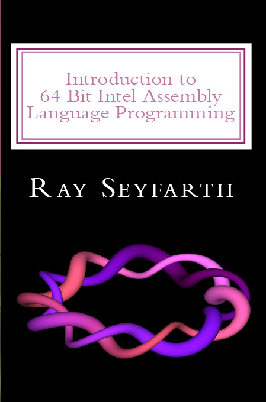

|
 |
Errata
Introduction to 64 Bit Intel Assembly Language Programming
Ray Seyfarth
|
Errata for Chapter 11
The section about comparisons needs a bit of work.
The floating point comparison instructions set different flags than the
integer comparisons.
Here is the proper set of floating point conditional jump instructions:
| instruction | meaning |
| jb | jump if below |
| jbe | jump if below or equal |
| ja | jump if above |
| jae | jump if above or equal |
| je | jump if equal |
| jne | jump if not equal |
- On page 116 "from" on the first line should be "for".
- The comments in the code at the top of page 118, need to use subtract
instead of add.
- On page 119, on the first line of 11.5.2, remove "double word".
- On page 119, second paragraph under 11.5.2, "if implicit" should be
"is implicit".
- On page 120, I tried to invent the instruction jmple. It should be
jbe.
- On page 122, replace sqrt in the code with sqrtss.
- On page 123, left out the function name for "dot_product".
- On page 123, replace "test" with "cmp" in the horner function.